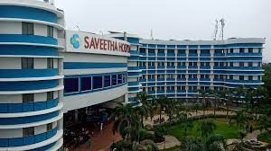

Saveetha Institute of Medical And Technical Sciences is a private and deemed-to-be-university located in Chennai, Tamil Nadu, India.[2] It has nine disciplines of studies: Dental College, School of Management, School of Law, School of Engineering, College of Liberal Arts and Sciences, School of Physiotherapy, School of Nursing and Medical College.[3] The first three disciplines are in Poonamalle while the rest are in Thandalam. Saveetha Engineering College is an Anna University-affiliated institution. Admissions are done through Class 12th Indian board examinations.
